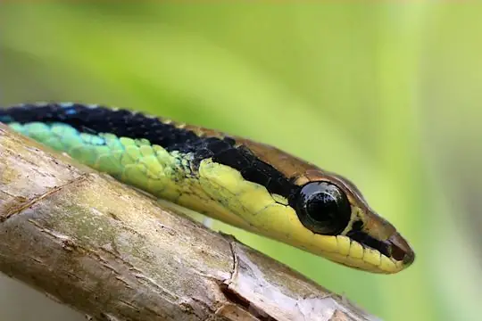
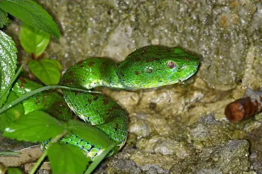
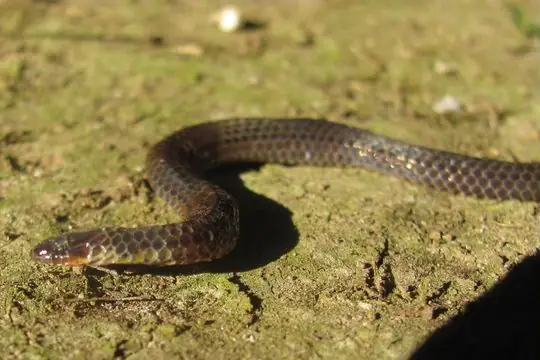
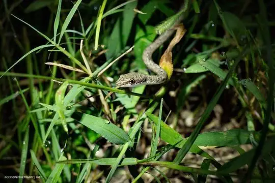
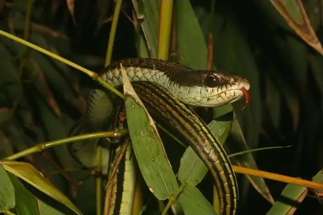
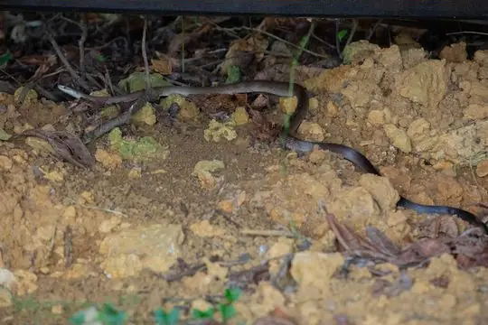

Snakes of Central Luzon (Region III)
A state or province of the Philippines
11 snake species are recorded in Central Luzon (Region III), a state or province of the Philippines, in SnakeList: 5 venomous and 6 non-venomous, from 4 families.
- 11species
- 5venomous
- 6non-venomous
- 4families
SnakeList records where snakes live by country and by state or province, not by exact spot, so a species listed here may live in only part of Central Luzon (Region III). All snakes of the Philippines.
Most widely recorded
The species here that have research-grade iNaturalist records in the most places across their whole range - not just in Central Luzon (Region III). That shows how often people have photographed them, not how many live here.
 Reticulated PythonMalayopython reticulatus
Reticulated PythonMalayopython reticulatus Dog-toothed Cat SnakeBoiga cynodon
Dog-toothed Cat SnakeBoiga cynodon
Maren's BronzebackDendrelaphis marenae
Philippine pitviperTrimeresurus flavomaculatus
Gervais' Reed SnakeCalamaria gervaisii
Philippine DryophiopsDryophiops philippina
Luzon BronzebackDendrelaphis luzonensis
Reddish Rat Snake (erythrurus)Coelognathus erythrurus
Snake families
Venomous and non-venomous
Venomous: 5Non-venomous: 6
3 are listed by SnakeList as dangerous to people: Barred Coral Snake (calligaster) Hemibungarus calligaster, Philippine pitviper Trimeresurus flavomaculatus, Reticulated Python Malayopython reticulatus.
The other venomous ones have mild venom: no serious bites to people are documented for them.
Habitats (rough estimate)
How many of its living snakes have each kind of habitat in SnakeList’s estimate. That estimate comes from every country, state and province where each snake is recorded - not from a survey of Central Luzon (Region III), and not checked species by species.
Who described them
The scientists who first described its most widely recorded snakes, and when.
- Reticulated Python Malayopython reticulatus -
- Dog-toothed Cat Snake Boiga cynodon -
- Maren's Bronzeback Dendrelaphis marenae -
- Philippine pitviper Trimeresurus flavomaculatus -
- Gervais' Reed Snake Calamaria gervaisii -
- Philippine Dryophiops Dryophiops philippina -
- Luzon Bronzeback Dendrelaphis luzonensis -
- Reddish Rat Snake (erythrurus) Coelognathus erythrurus -
Names and dates come from SnakeList’s reviewed species accounts; the others are looked up on Wikidata (CC0) when this page opens.
Biggest cities
The biggest cities in Central Luzon (Region III) from SnakeList’s city list, biggest first (placed here by their map position).
- San Jose del Monte
- Angeles City
- Santol
- San Fernando
- Olongapo
- Cabanatuan City
Neighbouring states and provinces
Places in SnakeList that share a border with Central Luzon (Region III).
- Cagayan Valley (Region II) 8 species
- CALABARZON (Region IV-A) 19 species
- Ilocos (Region I) 2 species
- National Capital Region 3 species
All 11 species
- Barred Coral Snake (calligaster) Hemibungarus calligaster venomous
- Dog-toothed Cat Snake Boiga cynodon venomous
- Gervais' Reed Snake Calamaria gervaisii
- Leyte Cat Snake Boiga angulata venomous
- Luzon Bronzeback Dendrelaphis luzonensis
- Maren's Bronzeback Dendrelaphis marenae
- Philippine Cat Snake Boiga philippina venomous
- Philippine Dryophiops Dryophiops philippina
- Philippine pitviper Trimeresurus flavomaculatus venomous
- Reddish Rat Snake (erythrurus) Coelognathus erythrurus
- Reticulated Python Malayopython reticulatus
No snake here matches that.